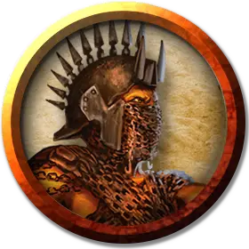

Принцепс Ковик
Princeps Kovik
Среднее Исчадие (Дьявол), законно-злое, именной НИП

Класс Доспеха 16 (природный доспех)
Хиты 85 (10к8 + 40)
Скорость 30 футов
| мод | спас | ||
|---|---|---|---|
| СИЛ | 18 | +4 | +4 |
| ЛОВ | 15 | +2 | +2 |
| ТЕЛ | 18 | +4 | +7 |
| мод | спас | ||
|---|---|---|---|
| ИНТ | 11 | +0 | +0 |
| МДР | 12 | +1 | +4 |
| ХАР | 14 | +2 | +5 |
Сопротивление урону холод; дробящий, колющий, рубящий от немагических атак, кроме нанесённых посеребрённым оружием
Иммунитет к урону огонь, яд
Иммунитет к состояниям отравление
Чувства тёмное зрение 120 футов, пассивное Восприятие 11
Языки Инфернальный, Телепатия 120 фт.
Опасность 8 (3900 опыта)
Бонус мастерства +3
Особенности
Дьявольское зрение. Магическая тьма не мешает тёмному зрению дьявола.
Сопротивление магии. Дьявол совершает с преимуществом спасброски от заклинаний и прочих магических эффектов.
Действия
Мультиатака. Дьявол совершает две атаки цепями.
Цепь. Рукопашная атака оружием: +8 к попаданию, досягаемость 10 футов, одна цель. Попадание: Рубящий урон 11 (2к6 + 4). Цель становится схваченной (Сл высвобождения 14), если нет другого существа, схваченного этим дьяволом. Пока цель схвачена, она опутана и получает колющий урон 7 (2к6) в начале каждого своего хода.
Оживление цепей (перезаряжается после короткого или продолжительного отдыха). До четырёх цепей, видимых дьяволом в пределах 60 футов от себя, магическим образом обрастают острыми колючками и оживают, находясь под контролем дьявола, при условии, что эти цепи никто не несёт и не носит.
У каждой ожившей цепи КД 20, 20 хитов, сопротивление колющему урону и иммунитет к урону звуком и психической энергией. Если дьявол в свой ход использует Мультиатаку, он может каждой ожившей цепью совершить одну дополнительную атаку Цепь. Каждая ожившая цепь может схватить по одной цели, но не может совершать атаки, если есть цель, схваченная ей. Ожившая цепь возвращается в неживое состояние, если её хиты опускаются до 0, а также если дьявол становится недееспособным или умирает.
Реакции
Обескураживающая иллюзия. Если существо, видимое дьяволом, начинает ход в пределах 30 футов от дьявола, дьявол может создать иллюзию, чтобы выглядеть как мертвец, бывший этому существу родным, или наоборот, как его злейший враг. Если это существо видит дьявола, оно должно преуспеть в спасброске Мудрости Сл 14, иначе станет испуганным до конца своего хода.
Описание
Этот невероятно жестокий цепной дьявол командовал 8-м пехотным легионом «Воплощение ужаса», пока его не разбил на берегах Стикса демонический владыка Костччи. Принцепс Ковик обвинил в поражении своих начальников, собрал выживших бойцов легиона и основал Остаток Восьмого, банду дьяволов-разбойников, отвергающих иерархию Преисподней.
Дьяволы служат под началом Ковика добровольно, поскольку цепной дьявол завоевал их доверие. Новые дьяволы-изгои нередко встают под знамёна Ковика. Эмблема цепного дьявола — цифра «8» из железных цепей на багровом поле. Ковик стремится собрать достаточно сил и дьявольских боевых машин, чтобы совершить то, что не удавалось ни одному архидьяволу: навеки загнать демонов обратно в Бездну.